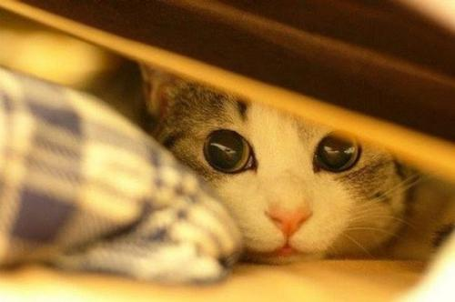
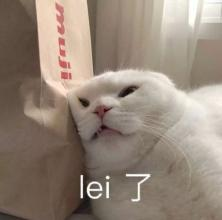

出远门家里的喵主子怎么办
猫相比其他宠物已经很好打理很适合懒人。但有一个问题总是很难解决的——那就是要出远门的话怎么安置它们。
别着急，笔者已经给你们准备好了攻略啦~
第一选择自然是直接把喵带走，如果不能带走，还可以选择寄养，或者花钱请人上门定期照看。但你的心头宝不一定是别人的心头宝，又或者，没有那么多米子可以花的铲屎官也可以选择终极大法！
那就是留它们独自在家！不过不是随便加点猫粮添点水就撒腿不管的哦！
猫的独立生活能力还是挺强的（毕竟平时也不怎么想理你）。只需要稍作准备就能放心让它们留在家撒野。
第一件事——猫粮
让猫自己留在家第一件事当然是保证它不被饿死。那么就必须要准备足够的猫粮。最开始我的做法相当简单粗暴，就是多倒一点猫粮，或者多倒个两三盆。这样两三天的远门绝对妥妥的。
不过后来有事情要出去一个星期，这样就有点捉襟见肘了，于是去某宝找了自动猫粮喂食器，还可以连接手机APP控制。平时在家也可以省去经常倒猫粮的痛苦。
第二件事——水
其次就是饮水的问题，猫咪对饮水还是挺挑剔的，第一不要用那种跟猫粮碗连在一起的饮水器，据说是因为猫不喝食物隔壁的水。而事实也似乎确有其事。所以这个时候需要一个自动饮水器，4升左右的容量，出门个7天也妥妥的。
第三件事——猫砂
吃喝的问题解决后，就到了拉撒的事情。有能力买自动猫砂盆的朋友就比较省心了。没能力买的，也不要紧，多准备几个盆或者是纸箱，装满猫砂，你就可以放心出去嗨皮啦！
第四件事——玩具
这个问题主要考虑到它自己一个在家会无聊，所以出门之前多准备了几个玩具给它，不过回来后发现它似乎也兴趣不太大。考虑到它平时在家也是睡觉比较多，这一点倒不用太担心。
第五件事——安全

最重要的一点放在最后，爱猫的人大概都能理解这种心情，养了猫就跟有了孩子一样，让孩子独自在家生活好几天无论如何都会担心。
首先是怕它走丢，所以门窗一定要关紧，包括阳台如果是封闭式的也要关紧，开放式阳台的话最好落地窗关紧，猫砂放到厕所，虽然住在高层猫也不会笨到跳楼，不过还是那句——以防万一。
有朋友说关紧门窗通风怎么办，其实并不会有危险，更不会窒息什么的，顶多就是回来的时候放猫砂的地方气味比较难以描述。
最后长时间见不到自己家的猫总会怀疑它还在不在人世，所以条件允许还可以弄个宠物监视摄像头，不仅可以随时看到猫咪在家的活动状况，还有红外线逗猫功能，远程逗它玩，据说有些还有语音通话功能，实在是感谢科技。